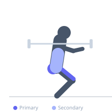
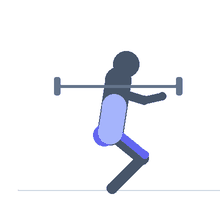

Exercise guide / Landmine Squat
Landmine Squat
The landmine squat is performed by holding the loaded end of a barbell anchored at floor level in a landmine attachment or corner, with the hands clasped at chest height. The angled path of the bar supports a naturally upright squat posture and reduces the need for significant ankle dorsiflexion or shoulder mobility. It is accessible to beginners and is an effective teaching tool for the squat pattern.
Primary muscles
rectus femoris
vastus lateralis
vastus medialis
gluteus maximus
Secondary muscles
erector spinae
rectus abdominis
Stabilizers
transverse abdominis
Equipment
Standard Barbell
Optional
Weight Plates


Starting position
- Anchor one end of a barbell in a corner or landmine attachment. Load the free end with appropriate weight. Hold the free end with both hands clasped together at chest height. Stand with feet shoulder-width apart.
Setup
- Place the barbell end in the corner where two walls meet (pad the wall), or use a dedicated landmine attachment. Load weight on the free end. Stand close to the loaded end so the bar is at a moderate angle.
Steps
- Step 1: Hold the loaded barbell end at chest height with both hands clasped. Stand tall, feet shoulder-width, toes slightly out.
- Step 2: Brace your core and initiate the squat by pushing the knees out and sitting the hips down.
- Step 3: Descend to at least parallel. The bar will follow the arc naturally — allow this guided path to assist your positioning.
- Step 4: Drive through the full foot to return to standing, pressing the bar slightly forward and up along its arc.
- Step 5: Exhale at the top.
Coaching cues
- Let the bar guide you — follow its arc
- Knees track over toes
- Hips and knees extend together on the way up
Breathing
- Inhale and brace before descent. Exhale at the top.
Range of motion
- Aim for parallel. The bar's angle assists depth, making this accessible for those with limited mobility.
Tempo
- 3-0-1-0
Common mistakes
- Standing too far from the anchor, creating an excessive bar angle
- Not descending to full depth, using the bar as a crutch
- Allowing the knees to cave inward
Safety
- Ensure the anchor point is secure before loading
- Keep hands firmly clasped — do not let the bar slip
Training
- strength: 5–10 reps
- hypertrophy: 10–15 reps
- endurance: 15–25 reps
- strength: 3–4 sets
- hypertrophy: 3–4 sets
- endurance: 2–3 sets
- Rest: {'strength': 120, 'hypertrophy': 60, 'endurance': 45}